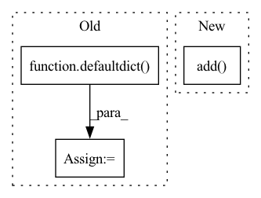

Pattern ID :28068
Before Change
self.id_to_charspan: Dict[str, CharSpan] = {}
self.id_to_labels: Dict[str, Set[str]] = defaultdict(set)
self.non_contig_span_to_labels: Dict[CharSpan, Set[str]] = defaultdict(set)
self.id_to_contig_mappings: Dict[str, Set[Mapping]] = defaultdict( set)
self.id_to_noncontig_mappings: Dict[str, Set[Mapping]] = defaultdict(set)
self.non_contig_id_map: Dict[str, Set[str]] = defaultdict(set)
self.id_is_contig: Dict[str, bool] = {}After Change
else:
for result_data in result_iter:
self.non_contig_id_map[result_data["from_id"]].add(result_data["to_id"])
self.non_contig_regions.add( result_data["from_id"])
self.non_contig_regions.add(result_data["to_id"])
def create_section(self) -> Section:
section = Section(text=self.text, name=self.task_data_id)In pattern: SUPERPATTERN
Frequency: 3
Non-data size: 3
Instances Fragment ID: 83018274
Project Name: astrazeneca/kazu
Commit Name: 4f44a945cc04e7bdb19ad299030def5f596bd6d5
Time: 2022-11-30
Author: richard.jackson4@astrazeneca.com
File Name: kazu/modelling/annotation/label_studio.py
M Class Name: LSToKazuConversion
N Class Name: LSToKazuConversion
M Method Name: _populate_lookups(2)
N Method Name: _populate_lookups(2)
M Parent Class:
N Parent Class:
M File Name: kazu/modelling/annotation/label_studio.py
N File Name: kazu/modelling/annotation/label_studio.py
M Start Line: 236
M End Line: 272
N Start Line: 133
N End Line: 167
Before Change
// We use the "__all__" key to specify aggregations
// that will be performed on all (non-key) columns.
self.list_aggs = defaultdict(list)
self.conv_aggs = defaultdict( list)
if isinstance(aggs, str):
aggs = {"__all__": [aggs]}
elif isinstance(aggs, list):
aggs = {"__all__": aggs}After Change
_conv_aggs, _list_aggs = set(), set()
for _agg in _aggs:
if _is_list_agg(_agg):
_list_aggs.add( "list" if _agg == list else _agg)
_conv_aggs.add(list)
else:
_conv_aggs.add(_agg)
self.conv_aggs[col] = list(_conv_aggs) Fragment ID: 83018272
Project Name: nvidia/nvtabular
Commit Name: 66223fbc425e8e5d3df93dee8363879cccb11413
Time: 2021-04-06
Author: rzamora217@gmail.com
File Name: nvtabular/ops/groupby.py
M Class Name: Groupby
N Class Name: Groupby
M Method Name: __init__(5)
N Method Name: __init__(5)
M Parent Class: Operator
N Parent Class: Operator
M File Name: nvtabular/ops/groupby.py
N File Name: nvtabular/ops/groupby.py
M Start Line: 79
M End Line: 91
N Start Line: 79
N End Line: 94
Before Change
def disambiguate(
self, id_sets: Set[EquivalentIdSet], document: Document, parser_name: str
) -> Set[EquivalentIdSet]:
score_to_id_set = defaultdict( set)
for id_set in id_sets:
for idx in id_set.ids:
score = self.metadata_db.get_by_idx(parser_name, idx).get("annotation_score", 0)
score_to_id_set[score].add(id_set)
best = max(score_to_id_set.keys())
return score_to_id_set[best]
After Change
best_score = score
best_equiv_id_sets = {id_set}
elif score == best_score:
best_equiv_id_sets.add( id_set)
return best_equiv_id_sets
Fragment ID: 83018280
Project Name: astrazeneca/kazu
Commit Name: 00f77e236450d45e2925ea5fb47755dbc07a6295
Time: 2022-11-30
Author: RichJackson@users.noreply.github.com
File Name: kazu/steps/linking/post_processing/disambiguation/strategies.py
M Class Name: AnnotationLevelDisambiguationStrategy
N Class Name: AnnotationLevelDisambiguationStrategy
M Method Name: disambiguate(4)
N Method Name: disambiguate(4)
M Parent Class: DisambiguationStrategy
N Parent Class: DisambiguationStrategy
M File Name: kazu/steps/linking/post_processing/disambiguation/strategies.py
N File Name: kazu/steps/linking/post_processing/disambiguation/strategies.py
M Start Line: 229
M End Line: 236
N Start Line: 229
N End Line: 241